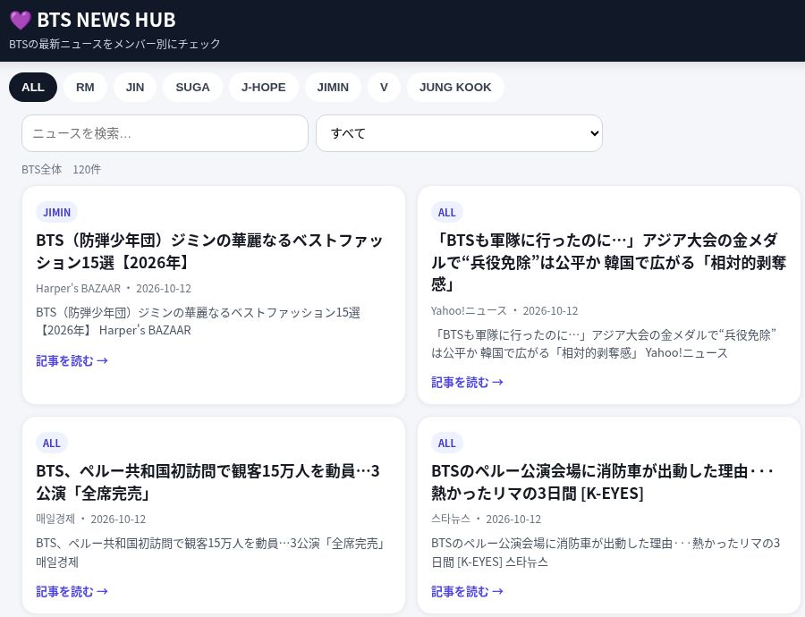
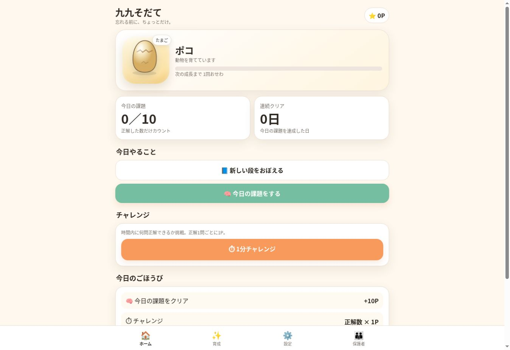
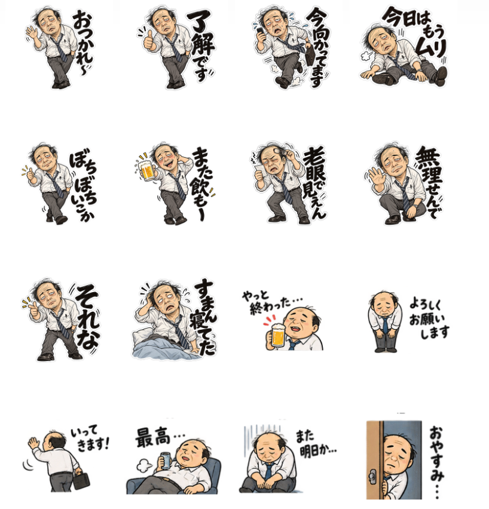

ChatGPTを本気で使い始めて、だいたい1週間。
率直に言うと、
ちょっと人生が変わりました。
大げさに聞こえるかもしれません。
でも最近は、
毎日ChatGPTを触るのが楽しくて仕方ありません。
朝起きて、
「今日は何を作ろう」
仕事の合間に、
「これもAIでできるんじゃないか」
夜になると、
また新しいものを作っている。
ここ最近、頭の中がずっとそんな感じです。
1週間前まで、Webサービスなんて作る側ではなかった
少し前までの僕は、
Webサイトを見る側でした。
アプリも使う側。
LINEスタンプも買う側。
「こういうものを作れる人ってすごいな」
とは思っても、
自分が作るとは考えていませんでした。
プログラミングもほとんど分かりません。
HTMLもGitHubも、
ちゃんと触ったことはありませんでした。
それがこの1週間で、
BTSのニュースサイトを作り、
九九の学習アプリを作り、
子ども用の学習ドリルを作り、
LINEスタンプまで販売しました。
そして今、
その過程を書くブログまで作っています。
この1週間で作ったもの

妻のひと言から作った、BTSのニュースをメンバーごとに見られるサイト。
制作記事を読む →
子どもが少しでも楽しく九九を覚えられるように作った学習アプリ。
制作記事を読む →
夏休みの学童用に考えた、印刷して使える“その子専用”ドリル。
制作記事を読む →
AIで作って、実際に販売までたどり着いたLINEスタンプ。
制作記事を読む →自分でも、
「なんで急にこんなことになっているんだ」
と思います。
一番変わったのは「できるか？」の前に「やってみる」ようになったこと
以前なら、
何かアイデアを思いついても、
まず考えるのは、
「でも作り方が分からない」
でした。
そこで終わります。
今は違います。
「こんなのあったら便利そう」
と思ったら、
まずChatGPTに聞きます。
「これ作れる？」
すると、
だいたい、
「できます」
と返ってきます。
もちろん、そのあと普通に苦労します。
ボタンが動かない。
画面が崩れる。
GitHubで失敗する。
何度修正しても微妙にズレる。
AIに頼めば全部一発で完成するわけではありません。
このブログでも、
その失敗を何度も書いてきました。
でも、それでも、
0だったものが形になります。
これは大きいです。
「思いつくこと」が急に価値を持ち始めた
AIを使い始めて面白いのは、
自分の中のアイデアを見る目が変わったことです。
以前なら、
「こんなのあったらいいな」
と思っても、
そこで終わりでした。
でも今は、
その次に、
「じゃあ作ってみよう」
があります。
子どもの夏休みに、
学童へ何を持たせるか困った。
じゃあ、
その子に合わせて問題が変わるドリルを作ろう。
妻がBTSの情報をまとめて見られたら便利そう。
じゃあ、
BTS NEWS HUBを作ってみよう。
LINEスタンプも作れるんじゃないか。
じゃあ、
販売するところまでやってみよう。
今までなら、
頭の中だけで消えていたアイデアが、
少しずつ現実のものになっています。
毎日、何かひとつ分かるようになる
もうひとつ意外だったのが、
AIに頼りっぱなしなのに、
少しずつ自分も詳しくなっていることです。
GitHub。
HTML。
Vercel。
Google Analytics。
Google Search Console。
1週間前なら、
ほとんど説明できなかったものばかりです。
今でも詳しいとは到底言えません。
エラーが出れば、
相変わらずAIに聞きます。
でも、
「GitHubにファイルを置いて公開する」
とか、
「Google検索に表示された回数はSearch Consoleで見る」
とか、
少しずつ分かることが増えています。
AIに全部やってもらうと、
何も身につかないのでは、
と思うこともありました。
でも今のところ僕の場合は逆で、
AIがいるから、今まで触らなかった世界に入れている
という感覚のほうが強いです。
ただ、少し怖さも感じている
一方で、
便利すぎるからこその怖さも感じています。
今作っているものは、
AIがいなければ、
ほとんど直せません。
エラーが出ても、
原因は分からない。
「どうすればいい？」
とAIに聞いて、
また直してもらう。
この便利さに慣れすぎると、
自分で考えなくなるのではないか。
そんなことも最近は考えるようになりました。
だから、
全部を理解する必要はなくても、
自分が何をAIに任せているのかくらいは理解したい。
今はそう思っています。
41歳で、また新しい遊びを見つけた感じ
この1週間で、
一番うれしかったのは、
何かすごいサービスを作れたことではありません。
新しく夢中になれるものを見つけたこと。
これかもしれません。
子どもの頃、
ゲームを買ってもらった日のように、
「次は何をやろう」
と考えるのが楽しい。
仕事でもなく、
義務でもなく、
ただ面白いからやっている。
40代になると、
毎日の生活はどうしてもある程度決まってきます。
仕事をして、
家に帰って、
家族と過ごして、
また次の日。
もちろん、それはそれで大切です。
でもそこに突然、
「自分でも何か作れるかもしれない」
という選択肢が増えました。
これは僕にとって、
かなり大きな変化でした。
まだ1週間です。
1か月後には飽きているかもしれません。
半年後には、
全然違うことをしているかもしれません。
このブログも、
誰にも読まれず終わる可能性があります。
でも、
今のところ、
毎日かなり楽しい。
そして、
1週間前の自分より、
明らかに「やってみる」回数が増えました。
だから今は、
少しくらい大げさでも、
こう書いておこうと思います。
AIを使い始めて、ちょっと人生が変わりました。
次の1週間で、
また何ができるのか。
今はそれが楽しみです。